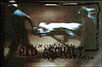

|
The Naked Dancing Llama
http://www.execpc.com/~cfeyrer/ndl.html Why a llama? The site's creator, Chris Feyrer, explains. "Llamas grab my attention for some reason. You think 'cow, cow, cow (yawn).... llama...llama?! Where?' They also are nice and obscure, like the emu and the ferret. Hmm. And they dance like you would not believe," Feyrer says. But a llama alone would not capture the imagination of a nation like the one on Feyrer's site. Evidently, by adding "naked" and "dancing" to the mix, he stumbled onto something. Feyrer says that his Naked Dancing Llama (NDL) has inspired people across the country to don NDL for President T-shirts and preach the wisdom of the llama. "A friend of mine who uses the pseudonym Xanthippe came up with FONDL, Friend of Naked Dancing Llama...kind of an unofficial fan club. Other netsurfers are realizing they should have been asking llamas the solutions to their problems long ago." We weren't quite so sure if the llama could answer ours, especially since all the tidbits of wisdom from the Hoofed One seem to have something to do with either frolicking or licking, such as this bit of llama lore: "Licking salt is no substitute for a good macadamia." |
||
|
W.A.T.R.O.A.E
http://www.xe.com/loyalty/abuse.html Women Are the Root of All Evil? Male or female, woman-hater or avid feminist, you'll likely be amused with this page, as misguided misogyny always makes for a fun, cheap laugh. In the words of the author, "The W.A.T.R.O.A.E. organization was mainly set up to warn other males about the evils of women, to provide comfort to those males who have to deal with women on a daily basis, to try not to understand women, and most importantly to try to provide alternative solutions to the survival of man with the extinction of women." As an added bonus, there's a frighteningly awful story about 200 dead monkeys. So do we believe women are the root of all evil? Examine our masthead for the answer. Notice all the women there...? |
||
|
Mike and Anthony's Wired Room
http://138.247.124.69/room/ Mike Bitz and Anthony Anderberg share a dorm room at the University of South Dakota. Small and cramped, it would be otherwise unremarkable except that these two programming majors "wired" their room so that visitors can turn on their fan, find out the room's temperature at any given moment and shut the hallway door. It takes some hard-core geeks to come up with such a site, we thought, so we checked out their bios. We were right. Anthony notes that he "enjoys canoeing, astronomy, bicycling, circuit building, weightlifting, Perl scripting and Metallica concerts." Metallica figures heavily in this site, with many references in the pair's highly entertaining FAQ. Therein, they answer such pressing questions as "What's the coolest Metallica song of all time?" ("Master of Puppets") and "What's the capital of Iceland?" (Reykjavik). |
||
|
Cigars I Have Smoked
http://www.eecs.uic.edu/~kcochran/cigar_diary.txt It takes a moment of great inspiration to dedicate a Web site to some form of personal consumption. The Webmaster shares his experiences in diary form with different types of cigars from Hemingways to smokes of the "illegal" variety such as Upmann Petit Coronas. Each smoking experience, from light up to the last toke, is presented with ambient detail. You'll smell the Caribbean Sea as you read the text. A lot of the smoking stories revolve around the Webmaster's wedding. But stogie stories are the extent of any potentially erotic honeymoon prose you'll find here. Sometimes a cigar is just a cigar. |
||
|
The Department of Energy Office of Human Radiation Experiments Home Page
http://www.ohre.doe.gov The Office of Human Radiation Experiments, formed in March 1994, created this site to keep the public informed of Cold War experiments that were conducted on humans. Sound tasty? You haven't seen anything yet. Original documents detailing experiments and governmental approval to conduct them make The X-Files look like The Brady Bunch. Just what do these documents say? Try this: "If it is felt by the contractor that the program involving experimentation with human subjects will be of ultimate interest or value to the Atomic Energy Commission it is suggested that such program be prepared for submittal to the Commission for their approval." This site includes photos, archived information and a telephone number to call if you think you may have been involved in radiation experiments yourself. |
||
|
Sensoria Kollectiv
http://www.tezcat.com/~sensoria/SensoriaKollectiv.html#anchor651068  The 'zine Sensoria Kollectiv is a collection of amusements that will startle your senses. Narratives, images and experiments, such as Red Asphalt, a tantalizing J.G. Ballard-inspired project that couples car-crash stories and disturbing photographs of accident victims, are creatively and thoughtfully presented. Sensoria's theme is dark and shocking -- not for the weak-of-heart. Don't be fooled by links such as "Hostess Fruit Pies." You're not getting what you think you are, unless you've checked out the rest of the 'zine already. The multimedia and Project One sound features are not to be missed. |
||
|
The John Gotti Tribute Page
http://ng.netgate.net/~ravenna/gotti.html Oddly affectionate tribute to Jon Gotti, "alleged mob boss but all-around nice guy." Start with the partially bleeped sound clip of Gotti graphically threatening some poor slob, then proceed to loving testimonials from his former neighbors, who miss his annual shindigs. One mission of the page is to free Gotti, "currently serving a life sentence in virtual solitary without the possibility of parole at one of the worst prisons in the United States, the lockdown Marion Control Unit Federal Penitentiary," the site's author notes. Highlights are summaries of Gotti-inspired made-for-TV movies and updates on the alleged unfairness of Gotti's trial. We admit we weren't sure if this page was written tongue in cheek. Celebrity worship is totally in vogue, though, and if you can stomach the occasional barbarities of running with the mafioso crowd, this devoted Gotti-watch might be right up your alley. |
||
|
The Sea Monkeys Worship Page
http://haven.uniserve.com/~sbarclay/seamonk.htm Surely you remember the ads from the pages of your childhood comic books. Who could resist Sea-Monkeys, frolicking underwater like Neptune, complete with little crowns and scepters? This page notes, "Sea-Monkeys® are amazing pets, portable, active, disposable...Watch them as they are born -- watch them as they grow -- watch them as they raise small families in the plastic tank you are supplied with! Just remember that they don't appear exactly as illustrated!" (Duh!) Although hope springs eternal, let's acknowledge that what springs from those packets of "Instant Life" are plain ol' brine shrimp. That aside, visit the Worship Page to find bad poetry and tales of woe regarding tragic Sea-Monkey mishaps, i.e., "I ate my Sea-Monkeys!" |
||
|
Todd's Gallery of Pathetic Human Regret
http://www.eden.com/~tfast/regret1.html Todd has alphabetized a life of regrets here. Some regrets are serious. ("I regret that we knocked over the bird nest above [the] garage and the baby birds fell all over the ground and were hurt.") Some are lewdly sincere. ("To Holly, a voluptuous teen: I wasn't able to see you taking a shower through the fence at night like my friend David said he could.") Some are just plain nutty ("To Ken: I regret not enjoying it more when your father held you down and insisted that your sister be allowed to bite you in retaliation for you biting her.") Overall, Todd's chronicle of missed opportunities showcases a world of knives, rebellion, heavy-metal music, thoughtfulness, snot, one-upsmanship and the '80s. Voyeurs will get a thrill; others will feel slightly disturbed at the frank tone and confessions within. |
||
|
The Satanic Side
of the Web
http://www.greyware.com/authors/pitman/hell.htm We're not really sure who would hire Satan, but he's looking for some new employment, according to this site. But then, who can blame him when you read the way he describes the job he's held since 7000 B.C. "I hate to break the news to you, but I'm basically a bureaucrat," the site says. "No fancy bets over people like Job, no appearing to religious fanatics in the middle of the desert and offering them kingdoms. I'm a paper pusher." Yes, that's right: Satan is a dweeb. His office is much like everyone else's corporate digs, complete with Dilbert cartoons tacked to the door. He even has to go outside his office to smoke (although luckily, most of Hell is a designated smoking area). His credentials seem pretty impressive: Harvard MBA, law degree from Yale and of course, he was the former "Right Hand of God." Like most job hunters, he glosses over the one job from which he was fired on his resume, noting that he left Heaven over "creative differences" to strike out on his own as a consultant. He boasts many accomplishments as an entrepreneur, from the Black Plague, the fall of Rome, the Inquisition, slavery, Pauly Shore and 3-D movies. But still, Satan remembers his job at hand, namely collecting souls for eternal damnation. In this case, he makes it easy. If your browser supports forms, you can just fill out a few blanks, hit a submit button and voilá -- you've made a deal with the devil! |
||